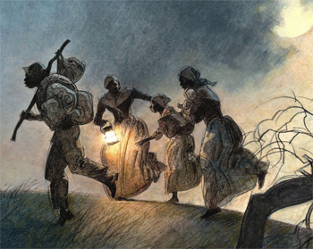
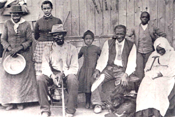

|
The Underground Railroad was a clandestine and loosely organized network of
routes and hiding places operated by free African Americans and white
abolitionists. Its sole purpose was to guide runaway slaves to freedom in the
North or in Canada. This vast network was not run by a single individual or
organization, but nevertheless it was an effective system that involved the
efforts of at least 3,200 slavery opponents by the 1850s. At its height of
activity, from 1820 to 1860, between 30,000 and 100,000 African American slaves
used "the only free road," as Henry David Thoreau described it, to reach
freedom.
|

An artist's depiction of slaves escaping along
the underground railroad.
|
The first anti-slavery activists in America were religious groups, such as
the Quakers. As early as the 1680s, Quakers began aiding runaway African
American slaves, and over the course of the next century, these efforts became
much more organized. In 1786, George Washington himself complained that one of
his fugitive slaves had been aided by a group of Quakers that was organized to
assist runaway slaves. In addition to these activities, members of the church
also resisted the institution in other ways. For example, Quaker leaders founded
the Society for the Relief of Free Negroes Unlawfully Held in Bondage in 1775 to
campaign for the abolition of slavery.
By the beginning of the nineteenth century, anti-slavery sentiment had moved
beyond religious groups, and had grown to include many secular leaders,
intellectuals, philanthropists, and free African Americans. Many of these new
converts to the cause were antagonized by political developments, especially the
Fugitive Slave Act of 1793 and Missouri Compromise of 1820. Others were inspired
by the religious sentiment that swept the country during the Second Great
Awakening. In any event, by the 1820s, the growing hostility to slavery in the
North had persuaded many white abolitionists, freed African American slaves and
even Native Americans to follow the Quakers' example and form their own freedom
networks.
Consistent with its decentralized nature, the Underground Railroad was
nameless for much of its existence. In an 1842 story, however, the New York
Semi-Weekly Express described the escaping of slaves by an "underground
railroad." The phrase quickly gained popularity, with both abolitionists and
slaveholders, and those individuals who participated in the railroad started
using railroad parlance. The various routes to freedom that ran across the 14
northern states and Canada were called "lines." The hiding places, where the
fugitives could rest and eat, were "stations" or "depots" run by
"stationmasters." Escaping slaves were "passengers," and were guided to freedom
by "conductors." The individuals who donated money to the network were
"stockholders."
Finding the way to freedom was not an easy task for travelers on the
railroad. Usually, they had to plot their own escapes, and make their own way to
their first stop on the railroad. Once in the hands of conductors, their outlook
improved, but the journey was still difficult. Runaways usually traveled 10 to
20 miles at a time, always at night. Even when they reached their final
destination in the North, many escaped slaves felt insecure, because the federal
fugitive slave acts of 1793 and 1850 allowed magistrates and slave-catchers to
seize freed slaves in Northern states and return them to their former masters.
Fear of recapture prompted at least 20,000 fugitive slaves to move to Canada,
which was coded "heaven" and "promised land" by the African American freedom
seekers.
|

Harriet Tubman (left) and her family. Tubman
led all of them to freedom via the Underground Railroad.
|
Serving as a conductor on the railroad was also difficult and risky, as it
was a federal crime to assist slaves on their run to freedom. Consequently, the
operators of the railroad maintained strict security. Messages between
conductors were encoded--the arrival of four adult slaves and two children, for
example, might be communicated as a, "delivery of four large and two small
hams." Participants operated in relative autonomy, and often were only aware of
the conductors with whom they had direct contact. This helped protect
participants, who could not be compelled to betray the names and locations of
other conductors if they did not know them. Despite these great risks, the
Underground Railroad rarely suffered for a lack of willing volunteers, some of
whom earned great fame for their exploits. Levi Coffin, for example, helped as
many as 2,000 slaves escape to freedom, and was known in some circles as the
"President of the Underground Railroad." Former fugitive slave Harriet Tubman
made 19 trips to the South to guide more than 300 slaves to their freedom. She
was called "Moses" by the grateful African Americans, and was justifiably proud
of her record. "I was the conductor of the Underground Railroad for eight
years," she wrote, "and I can say what most conductors can't say--I never ran my
train off the track and I never lost a passenger."
The Underground Railroad survived until the end of the Civil War, when the
abolition of slavery rendered it moot. It left behind a substantial legacy. In
addition to all the slaves that the railroad helped on their way to freedom, its
very existence helped push the slavery issue to the center of national politics.
As such, it helped precipitate the Civil War and the ultimate end of slavery.
After the war, the railroad, along with prominent conductors like Tubman, served
as important symbols of freedom for Americans, particularly those individuals in
the African-American community.
Source: Christopher Bates, ed. The Encyclopedia of the Early
Republic and Antebellum America (Armonk, NY: M.E. Sharpe, 2010), 1037-1038.
|